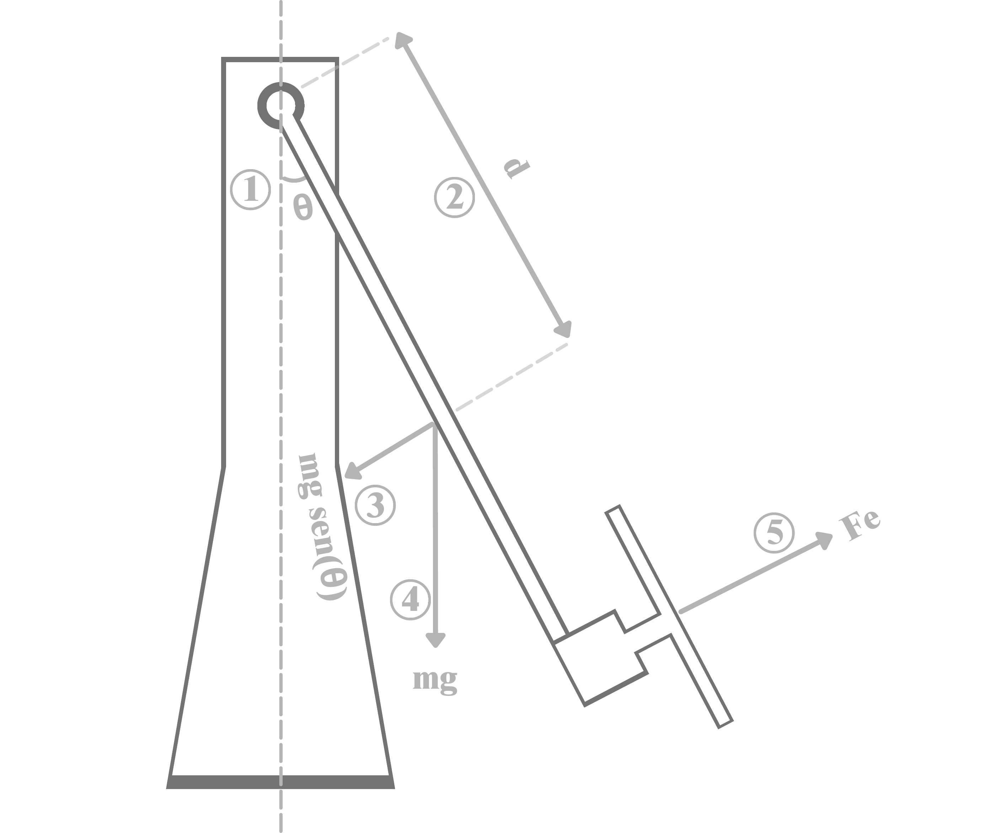
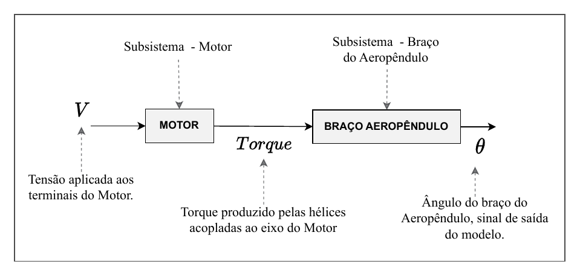
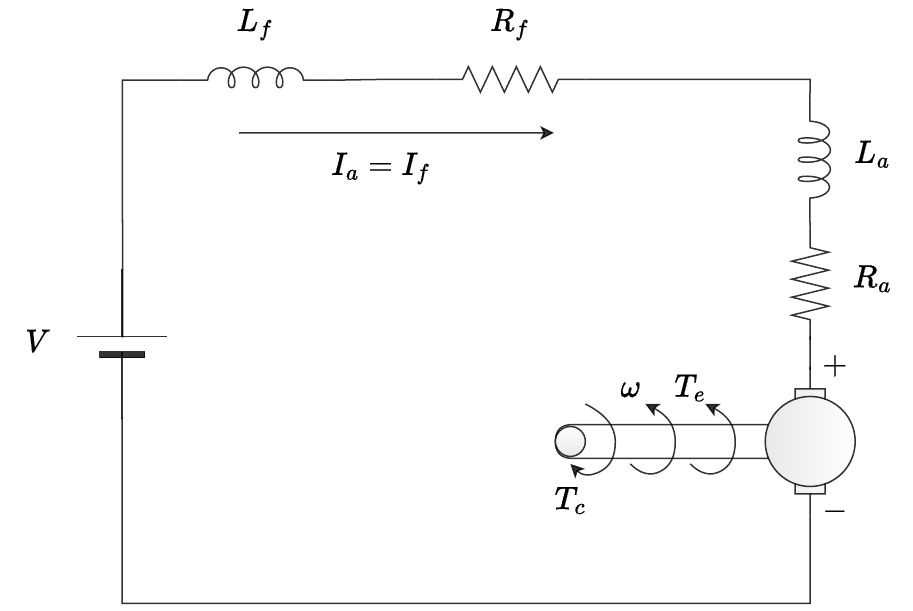

Modelagem Matemática

O Aeropêndulo tem um único grau de liberdade: o ângulo \(\theta\) do braço em relação à vertical. A entrada do sistema é a tensão \(V\) aplicada aos terminais do motor CC que aciona a hélice, e a saída é esse ângulo \(\theta\). Modelar o sistema significa encontrar a equação diferencial que relaciona essas duas grandezas a partir das leis da física — e é essa dedução, ponto a ponto, que esta página documenta.
Como a física vira equação
O braço do Aeropêndulo é, mecanicamente, um pêndulo acionado por um empuxo em vez de por um peso na ponta. A hélice, girada pelo motor, produz um empuxo que gera um torque em torno do pivô do braço; esse torque tem que vencer três coisas ao mesmo tempo: a inércia do próprio braço (ele resiste a acelerar), o atrito viscoso do pivô (que se opõe à velocidade angular) e a gravidade, que puxa o braço de volta para a posição de repouso na vertical. Escrevendo esse balanço de torques com a segunda lei de Newton para rotação, chega-se ao modelo não linear do sistema:
Figura — Diagrama de corpo livre do aeropêndulo: θ é o ângulo da haste, τ_emp o torque de empuxo, τ_grav o torque gravitacional restaurador e c·θ̇ o amortecimento viscoso no pivô.
O lado esquerdo, \(K_m V\), é o torque de entrada: a relação entre a tensão do motor \(V\) e o empuxo da hélice é, na realidade, não linear, mas para a faixa de operação do protótipo ela é bem aproximada por um ganho constante \(K_m\). O lado direito é o torque resistivo, formado por três parcelas — \(J\ddot\theta\) é o torque inercial (proporcional à aceleração angular), \(c\dot\theta\) é o torque de amortecimento viscoso (proporcional à velocidade angular) e \(mgd\sin(\theta)\) é o torque gravitacional restaurador, que tenta trazer o braço de volta para \(\theta = 0\).
Essa equação descreve apenas o braço, mas o sistema físico completo — motor mais braço — pode ser pensado como dois subsistemas em série: o motor CC transforma a tensão \(V\) em torque, e o braço transforma esse torque em ângulo \(\theta\). A figura abaixo mostra essa divisão.

O subsistema motor
O motor do protótipo é um motor CC série: o enrolamento de campo está ligado em série com o de armadura, então a mesma corrente \(i = i_a = i_f\) passa pelos dois. O diagrama abaixo mostra as resistências e indutâncias de campo (\(R_f\), \(L_f\)) e de armadura (\(R_a\), \(L_a\)), a velocidade angular \(\omega\) do eixo, o torque eletromagnético \(T_e\) e o torque de carga \(T_c\).

Pela lei das tensões de Kirchhoff, com \(R = R_a + R_f\) e \(L = L_a + L_f\), e pelo balanço de torques no eixo, com momento de inércia \(J_m\) e amortecimento viscoso \(b\):
Tanto a força contraeletromotriz \(E_a\) quanto o torque \(T_e\) dependem do fluxo magnético, que no motor série é produzido pela própria corrente. Desprezando a saturação, o fluxo é aproximado por \(K_0 i\), o que dá \(E_a = K_0\omega i\) e
O torque cresce com o quadrado da corrente, então o motor é, por si só, um subsistema não linear. O modelo do braço usado nesta página contorna isso resumindo o motor a um ganho constante \(K_m\) entre tensão e torque. A monografia também aponta que parâmetros como \(J_m\), e o amortecimento \(c\) do pivô do braço, são difíceis de obter numericamente — e usa essa dificuldade como motivação para a identificação de sistemas, que chega a um modelo a partir dos dados de ensaio.
Duas formulações de \(K_m\)
Esta página segue o notebook
Modelagem_matematica_do_aeropendulo.ipynb, em que \(K_m\) liga diretamente a tensão do
motor ao torque de entrada do braço (\(K_mV\)). Na monografia, o braço recebe o empuxo
\(F_e\) da hélice, e \(K_m\) liga a velocidade angular do motor a esse empuxo pela
aproximação linear \(F_e = K_m\omega\) da relação \(F_e = K_m\omega^2\); a função de
transferência do braço fica então \(\theta(s)/\omega(s)\), encadeada à saída do modelo do
motor. Os valores numéricos da tabela abaixo são os do notebook.
Linearização
A equação não linear acima é fiel à física do sistema, mas a maior parte das técnicas clássicas de projeto de controle — PID, alocação de polos, resposta em frequência — foi desenvolvida para sistemas lineares, descritos por funções de transferência. Para usar essas ferramentas é preciso obter uma versão linear do modelo, válida ao menos numa vizinhança do ponto de operação.
A não linearidade do modelo do Aeropêndulo está inteiramente concentrada no termo \(\sin(\theta)\). Para pequenas variações do ângulo em torno de \(\theta = 0\), vale a aproximação \(\sin(\theta) \approx \theta\) — é a mesma aproximação usada, por exemplo, na modelagem do pêndulo simples. Substituindo essa aproximação na equação não linear, obtém-se o modelo linearizado:
Essa é a equação usada daqui em diante: uma equação diferencial linear de segunda ordem, relacionando a tensão de entrada \(V\) ao ângulo de saída \(\theta\).
Da equação diferencial à função de transferência
Uma equação diferencial descreve a dinâmica no domínio do tempo, mas o projeto de controladores clássicos é feito no domínio da frequência, usando funções de transferência. A ponte entre os dois domínios é a transformada de Laplace: aplicando-a à equação linearizada (com condições iniciais nulas) e isolando a razão entre a saída \(\theta(s)\) e a entrada \(V(s)\), chega-se à função de transferência do sistema:
Essa é a forma simbólica, válida para qualquer Aeropêndulo com essa mesma estrutura física. Substituindo os valores numéricos dos parâmetros do protótipo (tabela abaixo), obtém-se a função de transferência numérica usada nas simulações e no projeto do controlador:
Parâmetros físicos
Os valores usados para obter a função de transferência numérica são os parâmetros físicos do protótipo, medidos ou estimados a partir da geometria e da massa do braço:
| Parâmetro | Valor | Unidade |
|---|---|---|
| \(K_m\) | 0,0296 | N·m/V |
| \(d\) | 0,03 | m |
| \(J\) | 0,0106 | kg·m² |
| \(m\) | 0,36 | kg |
| \(g\) | 9,8 | m/s² |
| \(c\) | 0,0076 | N·m·s/rad |
Representação em espaço de estados
Além da função de transferência, o mesmo modelo linearizado pode ser escrito em espaço de estados, definindo os estados \(x_1 = \theta\) (posição angular) e \(x_2 = \dot\theta\) (velocidade angular):
em que \(u = V\) é a entrada de tensão do motor. Essa representação carrega exatamente a
mesma informação da função de transferência, mas em outra forma matemática — e é essa outra
forma que torna o modelo mais útil em duas frentes que aparecem mais adiante no laboratório:
a simulação numérica do sistema, feita integrando essas equações diretamente com bibliotecas
como scipy ou python-control, e o projeto de controladores modernos (como os baseados em
alocação de polos ou realimentação de estados), que trabalham diretamente sobre as matrizes
\(A\) e \(B\) em vez da função de transferência.
Onde essa dedução aparece no código
O modelo linearizado acima é implementado e simulado em
Modelagem_matematica_do_aeropendulo.ipynb,
usando as bibliotecas NumPy e Python-Control. A identificação de sistemas
usa uma abordagem diferente — ajustar o modelo a dados reais em vez de derivá-lo
puramente da física — e chega a um modelo mais preciso, validado comparando a saída
simulada com a saída real do protótipo.